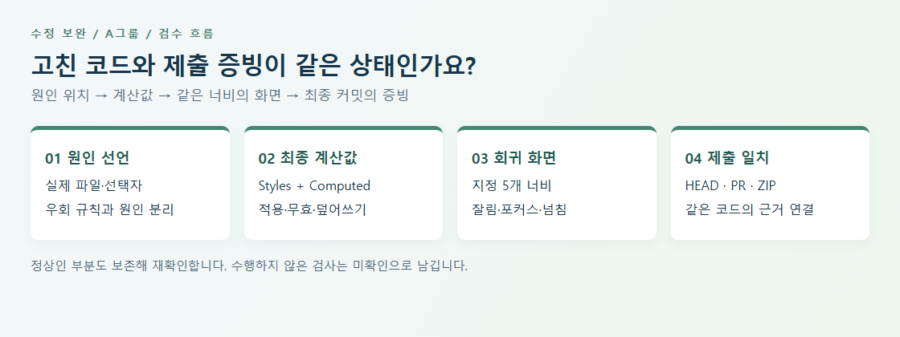

수정 보완 | A그룹
1. 학습 목표와 먼저 확인할 항목
CSS를 분리하고 오류를 설명하는 데서 한 걸음 더 나아가, 실제 적용값·화면·제출 기록이 같은 결과를 가리키도록 정리합니다. 자기 피드백에 기본 선언 오류가 남았다면 그 항목부터 해결한 뒤 심화 검수로 넘어가세요.
| 목표 | 직접 할 일 | 남길 근거 |
|---|
| 원인 위치 수정 | 우회 선언과 원래 결함을 구분 | 파일·선택자·변경 이유 |
| 회귀 확인 | 정상 부분까지 같은 조건으로 다시 검사 | 너비별 캡처·계산값 |
| 제출 일치 | 최종 코드·문서·PR·ZIP 대조 | 브랜치·커밋·실제 링크 |
실제 평가 범위는 CSS 8개 분리, 결함 3건, 5개 지정 너비, 의미 있는 커밋과 PR·ZIP·전후 증빙입니다. 아래 작은 카드 예시는 별도 제작한 연습 자료이며 평가 결과물 전체나 정답을 대신하지 않습니다.
수정 보완 | A그룹
2. 진단과 검수를 이어 주는 시각 예시

브라우저에서 임시로 수정해 정상처럼 보여도 디스크 파일이 그대로면 제출 결과는 달라집니다. 반대로 파일이 저장되어도 다른 규칙이 덮으면 기대한 화면이 나오지 않습니다. 네 연결을 각각 확인해야 합니다.
- Styles: 어느 파일의 어느 선언이 적용되거나 무효·재정의되었는가?
- Computed: 선택한 요소의 최종 display·max-width·열 정의는 무엇인가?
- 화면: 같은 너비에서 잘림·중복·포커스 문제가 사라졌는가?
- 제출: 방금 확인한 파일이 최종 커밋·PR·ZIP 안에도 있는가?
실습: lab/index.html을 열고 4열 카드가 좁은 화면에서 2열로 바뀌는지 확인합니다. layout.css와 responsive.css 순서를 연습 사본에서만 바꾸고 결과를 비교한 뒤 복구하세요. 화면 변화가 없더라도 우선순위와 적용되는 미디어 조건을 근거로 설명합니다.
수정 보완 | A그룹
3. CSS 책임과 캐스케이드 정리
이번 평가에서 확인한 연결 순서와 역할을 자기 파일에서 대조합니다. 아래 순서만 외워서는 충분하지 않습니다. 같은 출처·중요도·레이어·명시도 등 앞선 우선순위가 같을 때 뒤 선언이 영향을 주므로, 실제 최종값을 확인하세요.
| 파일 | 책임 | 검수 질문 |
|---|
| normal.css | reset·기본 요소 | 기존 의미 구조·포커스 보존 |
| root.css | 공통 원시 변수 | 선언 이름과 범위 |
| component.css | 프로젝트 의미 변수 | 주석·문법과 실제 적용 |
| btn_cpn.css | 버튼·아이콘 | 링크와 버튼 역할 |
| item_cpn.css | 개별 항목·유틸리티 | 공통 항목 책임 |
| layout_cpn.css | 컨테이너·Grid | 너비와 배치 |
| style.css | 페이지별 영역 | 중복 연결·덮어쓰기 |
| media.css | 화면 구간별 변경 | 기본 규칙과 연결 |
중복 link, 틀린 폴더, 닫히지 않은 주석, 원인 파일을 고치지 않고 media.css에 덮은 규칙을 찾아 표시합니다. 원래 정상인 규칙이나 콘텐츠를 지워 문제를 감추지 마세요.
수정 보완 | A그룹
4. 5개 너비의 회귀 검수
같은 최종 파일과 브라우저에서 검사합니다. 브라우저 종류·버전, 확대 비율, 뷰포트 너비, 검사 시각과 커밋을 기록하고 결과는 통과·실패·미확인으로 구분합니다.
| 너비 | 주요 확인 | 근거 |
|---|
| 1920px | 컨테이너 최대 폭·중앙 정렬, 기본 열 | Styles·Computed·전체 화면 |
| 1600px | 경계 여백·잘림·겹침 | 컨테이너와 실제 내용 폭 |
| 1024px | 내비게이션과 상품 배열 변화 | 열 수·문서 가로 넘침 |
| 768px | 카드·컬렉션 재배치 | 작은 화면 읽는 순서 |
| 480px | 가로 넘침·글자·푸터·조작성 | 폭 수치·Tab 포커스·화면 |
가로 넘침은 문서의 scrollWidth가 clientWidth보다 큰지 확인하고, 차이가 있으면 원인 요소까지 찾습니다. 값이 같아도 글자 잘림·겹침·불필요한 숨김이 있을 수 있어 화면 확인을 함께 합니다. overflow-x:hidden으로 가리는 방식은 원인 수정의 증빙이 아닙니다.
기존 링크·버튼은 Tab으로 이동하며 포커스 표시와 역할을 확인하고, 이미지 설명·작은 화면 조작성도 실제 위치와 연결하세요. 다른 브라우저를 검사하지 않았다면 해당 환경은 미확인으로 남깁니다.
수정 보완 | A그룹
5. 보고서·최종 커밋·PR·ZIP 일치
실행한 파일의 위치와 제출 브랜치를 먼저 확정합니다. 보고서의 해시를 예상해서 적지 말고 실제 명령 결과와 비교하세요. 아래 명령은 상태를 읽는 용도입니다.
git status --short
git branch --show-current
git rev-parse HEAD
git log --oneline -5
git diff
| 대상 | 확인할 연결 | 다르면 할 일 |
|---|
| 보고서 | 최종 해시와 수정 파일 | 현재 결과로 갱신 |
| 화면 증빙 | 같은 커밋·너비·전후 조건 | 다른 상태는 구분 |
| 개별 PR | 실제 /pull/번호와 변경 diff | 목록 주소·없는 링크 교체 |
| ZIP | 방금 검증한 파일·보고서 | 새 폴더에 풀어 재확인 |
실제 평가에서 요구한 의미 있는 커밋 4개 이상은 변경 목적과 연결되어야 합니다. 기록을 꾸미거나 존재하지 않는 PR을 적지 않습니다. 이미 병합된 작업에 새 PR을 만들 차이가 없다면 임의 변경으로 이력을 꾸미지 말고 현재 상태를 설명하고 강사와 확인합니다.
수정 보완 | A그룹
6. 실습 양식·완료 기준·다음 학습
- 실습양식 01: 연결 순서와 책임표를 채우고, 중복·우회 규칙 한 건의 유지/정리 이유를 설명합니다.
- 실습양식 02: 5개 너비에서 같은 선택자의 계산값·화면·접근성 결과를 기록합니다.
- 실습양식 03: 최종 커밋·PR·ZIP을 연결하고 다른 상태의 증빙을 구분합니다.
| 완료 확인 | 자기 점검 |
|---|
| 기본 오류 | 자기 피드백의 잔존 항목이 해결되거나 미해결로 명시됨 |
| 검수 근거 | 선택자·너비·실제값·캡처를 다시 찾을 수 있음 |
| 협업 근거 | 같은 최종 코드의 문서·PR·ZIP을 열 수 있음 |
| 다음 활동 | 다른 작은 CSS 수정에도 같은 기록 흐름 재사용 |
막히면 전체 파일을 다시 쓰지 말고 원인 선언 한 곳의 전후 값부터 확인하세요. 다음 수업에서는 고친 항목과 보존한 정상 영역을 함께 설명해 보세요.
수정 보완 | A그룹
7. 참고자료와 적용 활동
한국어 무료 공개 자료입니다. 안내한 범위를 읽거나 보고 자신의 결과물에 적용하세요.
생활코딩 · egoing
CSS 코드의 재사용
학습 범위: 공개 본문의 2.html 소스에서 외부 style.css 연결 부분. 영상 시청은 선택이며 이 자료는 본문 코드 확인에 근거합니다.
읽고 할 일: 내 HTML에서 CSS 경로와 중복 연결을 찾아 파일·역할·실제 적용을 연결해 적습니다.
Google · Chrome for Developers
CSS 기능 참조
학습 범위: CSS 보기, 잘못되었거나 재정의된 CSS, 요소에 실제로 적용된 CSS만 보기 절.
읽고 할 일: 같은 요소의 Styles 원인 선언과 Computed 최종값을 나란히 기록합니다.
GitHub Docs
끌어오기 요청 만들기
학습 범위: 한국어 웹 브라우저 절의 base·compare 선택과 제목·설명 작성. 실습은 자신의 저장소 권한 범위에서 수행합니다.
읽고 할 일: 수정 브랜치와 대상 브랜치의 차이를 확인하고 실제 개별 PR에 변경 이유·검증 결과를 연결합니다.